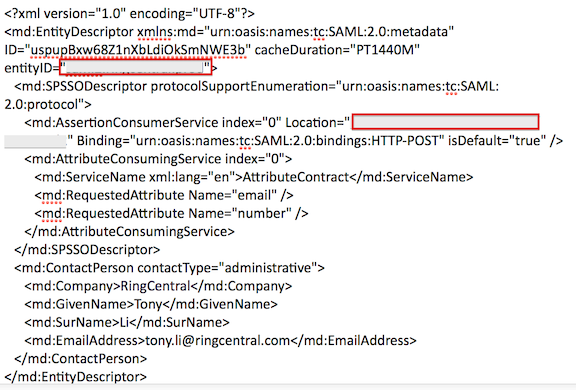
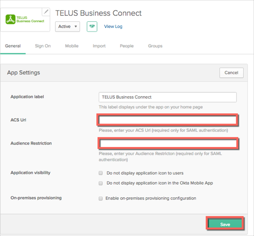
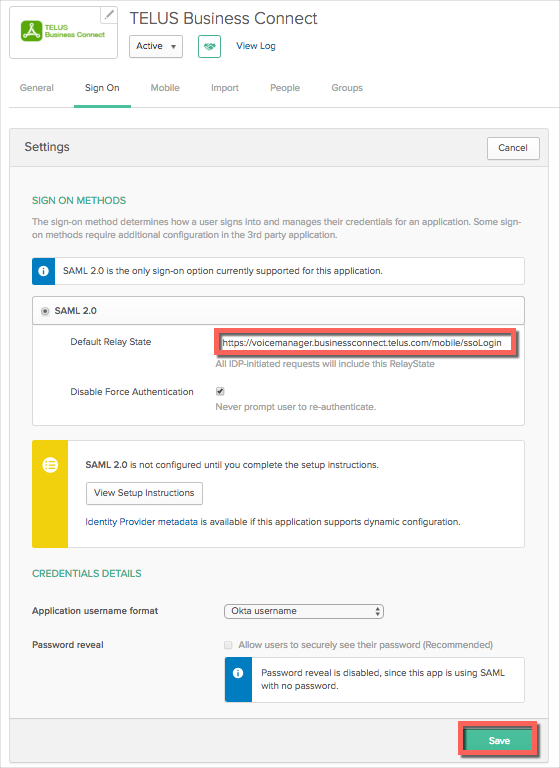
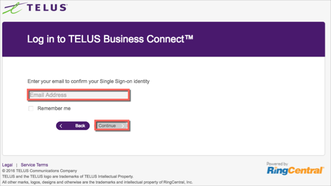

Generate the following IDP Metadata and save to a file named metadata.xml:

Copy the value of the entityID field in the SP metadata file into the Audience Restriction field in Okta.
Copy the value of the Location field in the SP metadata file into the ACS Url field in Okta.
Click Save.

In Okta, select the Sign On tab for the TELUS Business Connect app, then click Edit
For Default Relay State enter: https://voicemanager.businessconnect.telus.com/mobile/ssoLogin.
Click Save.

Done!
Notes:
IdP-initiated flows and SP-initiated flows are supported.
Just In Time (JIT) provisioning is not supported.
For an SP-initiated flow:
Go to https://voicemanager.businessconnect.telus.com/login/startupSSOLogin.html.
